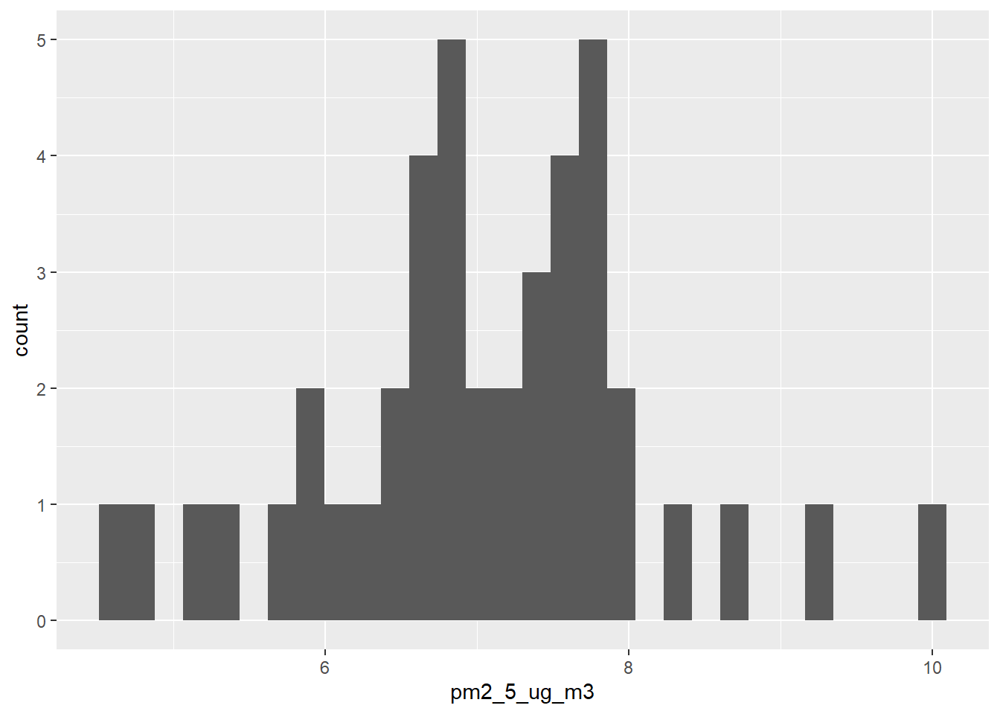

Variable |
Book Nook Stop |
Clairmont Stop |
Kroger Stop |
Steak ’N Shake Stop |
Overall |
|---|---|---|---|---|---|
| VOC (ppm) | 0.000 (0.000, 0.005) | 0.008 (0.000, 0.018) | 0.021 (0.000, 0.026) | 0.003 (0.000, 0.006) | 0.003 (0.000, 0.012) |
| PM1 (µg/m³) | 4.90 (4.30, 5.70) | 6.00 (5.35, 6.15) | 5.10 (4.50, 5.70) | 5.95 (5.15, 7.10) | 5.50 (4.90, 6.00) |
| Missing | 4 | 3 | 1 | 3 | 11 |
| PM2.5 (µg/m³) | 6.60 (5.80, 7.30) | 7.80 (7.20, 7.80) | 6.60 (6.20, 7.40) | 7.85 (6.80, 8.55) | 7.10 (6.50, 7.80) |
| Missing | 4 | 3 | 1 | 3 | 11 |
| PM10 (µg/m³) | 7.40 (7.00, 8.30) | 8.70 (8.05, 9.00) | 7.60 (7.30, 8.00) | 9.25 (7.80, 9.80) | 8.00 (7.40, 8.70) |
| Missing | 4 | 3 | 1 | 3 | 11 |
| 1
Median (Q1, Q3) |
|||||
Epi 590R Final Project
The following document displays descriptive statistics, a figure, and regression analysis of an older data set collected by the author for a previous course, EH 510. Data collection was done by collecting ambient air and different particulate matter (PM1, PM2.5, and PM10) and volatile organic compound (VOCs) concentrations while visiting different bus stops in the North Druid Hills area. PM2.5 concentrations will be the main variable of focus in this analysis.
Table 1 displays the particulate matter and VOC concentrations at different bus stops. The median and IQR are 7.10 (6.50, 7.80).
The experiment on Day 1 took 55 minutes and the average PM 2.5 concentration was 7.0380952 µg/m3

Figure 1 displays a histogram of PM2.5 concentrations over a one hour sampling period on Day 1
Variable |
Beta |
95% CI 1 |
p-value |
|---|---|---|---|
| Temperature (C) | -0.12 | -0.95, 0.71 | 0.8 |
| Bus Stop | |||
| Book Nook Stop | — | — | |
| Clairmont Stop | 1.1 | -0.89, 3.0 | 0.3 |
| Kroger Stop | 0.20 | -0.96, 1.4 | 0.7 |
| Steak 'N Shake Stop | 1.3 | 0.21, 2.3 | 0.021 |
| 1
CI = Confidence Interval |
|||
Table 2 displays the relationship between PM2.5, temperature (C), and bus stop location in a linear regression table.